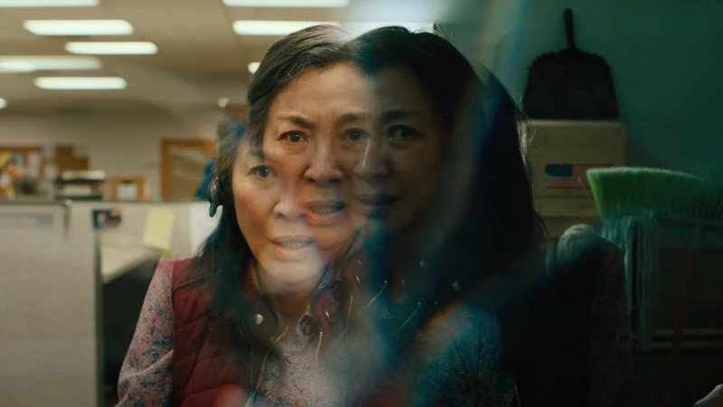
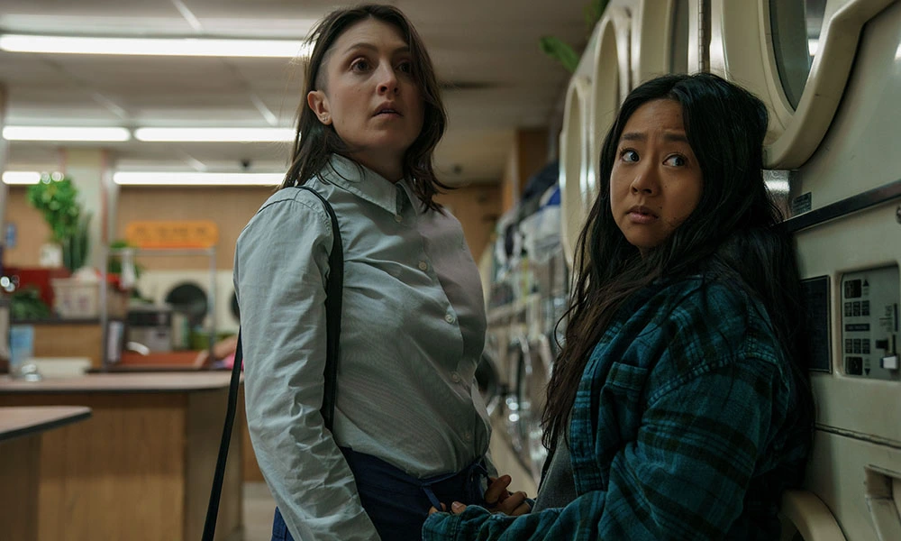
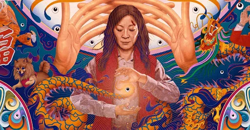

-Everything Everywhere All at Once-
หนังได้บอกกับเราว่าทุกๆจักรวาลนั้นล้วนเกิดมาจากการตัดสินใจที่แตกต่างออกไปหลายล้านรูปแบบอย่างไม่มีที่สิ้นสุด หรือแม้แต่เกิดจากความจริงที่ต่างออกไปจากโลกของเราอย่างมาก(Multiverse) แต่ในชีวิตจริงนั้นเราไม่อาจรู้ได้เลยว่าสิ่งที่หนังกำลังบอกเราอยู่นั้นมันเป็นไปได้จริงมั้ย หรือมันเป็นแค่เพียงทฤษฎีทางวิทยาศาตร์ก็แค่นั้น... แต่สิ่งที่เราทำได้ดีที่สุดก็คือใช้ชีวิตอยู่ในจักรวาลนี้ให้คุ้มค่าและมีความหมายที่สุดก็พอ
- Evelyn Wang (Michelle Yeoh); Definition: ลูกสาว, ภรรยา, แม่ All at once เธอเป็นตัวละครที่ต้องแบกรับภาระหน้าที่และบทบาทต่างๆอยู่ตลอดเวลา ทั้งการต้องป็นลูกสาวที่ดีของอากง เป็นภรรยาที่ต้องอยู่ดูแลสามีสุดไม่เอาไหนอย่าง Waymond (Ke Huy Quan) และธุรกิจซักอบรีด ทั้งยังต้องเป็นแม่ที่พยายามเข้าใจลูกสาววัยขบถอย่าง Joy (Stepanie Hsu) อีกด้วย หนังทั้งเรื่องจึงเป็นเหมือนกับการเล่าชีวิตของเธอผ่านบทบาทเหล่านี้ รวมถึงบทบาทของเธอใน universe ต่างๆด้วย ซึ่งตรงนี้แหละที่ทำให้เธอได้เรียนรู้ว่าพหุจักรวาลนั้นมีความเป็นไปได้ที่ไม่สิ้นสุดขนาดไหน รวมถึงการได้บรรลุสกิลพิเศษจากจักรวาลต่างๆด้วย แต่ถึงแม้ว่าสเกลเรื่อง Multiverse มันจะกว้างและแปลกมากขนาดไหนก็ตาม แต่เราจะขอย่อยเหลือแค่สามเรื่องหลักๆตามนี้ 
- Waymond’s kindness: ตั้งแต่ต้นเรื่อง Evelyn จะมองตลอดว่าเค้าเป็นสามีที่ไม่เอาไหน และมักเล่นไร้สาระไปวันๆ
แต่เมื่อหนังดำเนินไปเรื่อยๆเราก็ได้พบว่านั่นเป็นเพียงมุมมองด้านเดียวเท่านั้น Waymond เองก็รู้ดีว่าภรรยาคิดยังไงตนจึงเป็นที่มาของ quote โคตรดีอย่าง
* "When I choose to see the good side of things, I'm not being naive. It is strategic and necessary. It's how I've learned to survive through everything."
*“There’s only one thing that I do know, is that you have to be kind, please…be kind, especially when we don’t know what is going on.”
ฮืออออ คือน้ำตาซึมไปแล้วซีนนี้..
และด้วยคำพูดเหล่านี้เองที่ทำให้ Evelyn ฉุกคิดได้ว่าการที่เราสู้กับปัญหาใดก็ตามด้วยความมีเมตตาและมองสิ่งต่างๆในด้านดีนั้น บางทีมันก็ช่วยให้เราผ่านอุปสรรค์ไปได้ไม่ยากอย่างที่คิด
ทุกอย่างไม่ว่าจะดีหรือร้ายล้วนอยู่ที่เราเลือกมอง ซึ่งซีนนี้เองที่นางเลือกที่จะไฟต์กับ jumper ทุกคนด้วยการเติมเต็มความปรารถนาให้กับบุคคลนั้นๆแทนที่จะปล่อยพลังกังฟูแบบที่ผ่านมา ซึ่งมันออกมาทั้งแปลกและเจ๋งในเวลาเดียวกันเลย
- เราจะเห็นได้ว่าทั้งแม่-ลูก ต่างก็ได้มาสเตอร์พลังข้ามจักรวาลนี้จนแทบจะบิดเบนความจริงได้ตามใจนึกแล้ว แต่สิ่งที่ต่างกันของทั้งคู่ก็คือ “มุมมอง” ด้าน Evelyn เองเมื่อได้เทิร์นโปรกับพลังนี้แล้ว ใช่ มันอาจจะมีช่วงนึงที่นางคิดว่าในพหุจักรวาลนี้มีความเป็นไปได้ที่ไม่สิ้นสุดมากๆ ตนเองก็เป็นเพียงมนุษย์ตัวเล็กๆที่ไม่ได้มีค่าอะไรเลยทำไมเราไม่ดับสูญไปพร้อมกับ Joy เลยหละ แต่สุดท้ายนางก็คิดได้ว่า ใช่แล้วหละ มนุษย์เราเป็นแค่เสี้ยวเล็กๆเท่านั้น แต่ในเมื่อเรารอบล้อมไปด้วยคนที่เรารักและห่วงใยอยู่แล้ว บางทีมันก็ดีเหมือนกันที่แค่ได้ใช้ชีวิตไปวันๆกับพวกเค้า. 
- Nihilism; Joy Wang: คือปรัชญาที่ว่าด้วยการคัดค้านต่อความหมายและคุณค่าของชีวิต คุณค่าของมนุษย์นั้นไม่มีมูลความจริง,
ชีวิตนั้นไม่มีความหมาย, ความรู้นั้นเป็นไปไม่ได้ หรือ หน่วยงานบางส่วนไม่มีอยู่จริง
Joy นั้นมีความคิดแบบ nihilist มันเหมือนกับเธอได้บรรลุแล้วว่าชีวิตนี้มันไม่มีค่าขนาดไหน นั่นจึงเป็นอีกหนึ่งเหตุผลที่อธิบายได้ว่าทำไมเธอถึงมุ่งที่จะทำลายทุกพหุจักรวาลและผู้คนในนั้นโดยที่ไม่มีความรู้สึกว่ามันผิดเลยแม้แต่น้อย
ในมุมมองของเธอแล้ว ทุกสิ่งมีชีวิตและทุกๆอย่างที่อยู่รอบตัวมันล้วนไม่ต่างอะไรกับพล็อพประกอบฉากที่ไม่มีความสำคัญ และเมื่อ Evelyn
ผู้เป็นแม่ได้เข้าใจหัวอกของลูกสาวแล้ว แค่นี้ Joy ก็พอใจและพร้อมให้เบเก้ลหลุมดำดูดเธอกับแม่ให้หายไปพร้อมกัน

- Absurdism; Evelyn Wang: คือปรัชญาแนวคิดที่คล้ายๆกับ nihilist ซึ่งว่าด้วยความไร้ความหมายของชีวิต แต่แทนที่จะมาคิดว่าชีวิตนั้นควรดับสูญไป
มันกลับเป็นแนวคิดที่บอกกับเราว่า ถึงแม้ชีวิตมันจะไม่มีค่าและความหมายเลย แต่เราก็ยังจะใช้มันต่อไป
Albert Camus นักคิด นักปรัชญาที่ขึ้นชื่อเรื่อง Absurbism เคยบอกว่า ถ้าเรามัวแต่พยายามหาว่าความสุขคืออะไร เราจะไม่มีความสุข หรือถ้าเอาแต่ตามหาความหมายของมัน เราจะไม่มีทางได้ใช้ชีวิตและชื่นชมมันเลย
เหมือนกับ Evelyn เองที่สุดท้ายก็คิดได้ว่าชีวิตมันก็ไม่ได้มีค่าอะไรเป็นพิเศษ แต่อย่างน้อยๆก็เลือกที่จะอยู่กับมันต่อไป เลือกที่จะอยู่กับลูกหัวขบถ สามีผู้อ่อนโยน และอากงผู้ดื้อดึง แค่นี้เธอก็พอใจแล้ว ไม่จำเป็นต้องไปอาศัยอยู่ในจักรวาลที่ดีกว่านี้เลย.
- เราประทับใจกับการตัดต่อทั้งด้านภาพและเสียงของ EEAAO มากๆ มันทั้งกลมกล่อม หยาบกระด้าง และ อบอุ่น All at once สมกับชื่อเรื่องจริง เรามองว่านี่ก็อาจจะเป็นธีมของหนังส่วนหนึ่งด้วยแหละ ที่นอกจากจะเน้นความรวมมิตรของพหุจักรวาลออกมาได้เพี้ยนมากๆแล้ว มันยังเน้นการถ่ายทอดอารมณ์ออกมาได้หลากหลายอีกด้วย.
-ซีนอารมณ์ไม่ว่าจะของคู่สามี-ภรรยา หรือ แม่-ลูก มันช่างออกมาสวยงามและอบอุ่นจริงๆ สุดท้ายแล้ว Joy ก็แค่ต้องการให้แม่เข้าใจและยอมรับตนและปล่อยเธอไปตามทางของตัวเอง แต่ Evelyn ผู้เป็นแม่มีหรือจะยอมเสียลูกสาวไปเหมือนกับที่อากงเคยทำกับเธอไว้สมัยวัยสาว ก็มีแค่ความเข้าใจและความเมตตาอย่างที่ Waymond ว่านั่นแหละที่จะกอบกู้ปัญหาได้.–––
Source: https://www.blockdit.com/posts/5ffc755cb1b2380ceb72b014
#EverythingEverywhereAllatOnce
ผู้เขียน: ประยศ ปลอดภัย (Red)
ภาพประกอบ: ประยศ ปลอดภัย (Red)